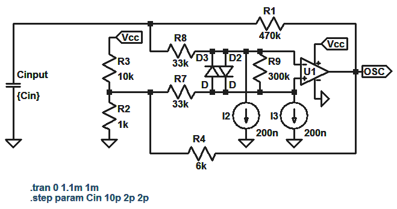
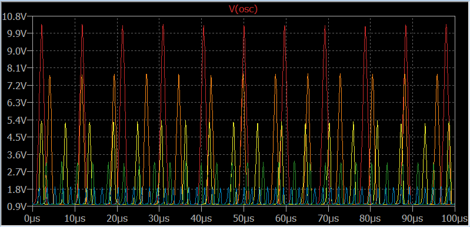

Touch sensors are ubiquitous these days, and can be designed very easily using an MCU, but I wanted to do it analog. My design is based around an op amp relaxation oscillator, a simple peak detector and a comparator. I am only going to show the first stage because the output conditioning is self explanatory.
Sometimes, the best things about op amps are their non-idealities. One important thing to remember about internally compensated op amps (like the NE5532, for example) is that, aside from improving the stability of the device, that integrated capacitor can be put to work to do other things.
In this circuit, I'm using the op amp's finite gain bandwidth product (or maybe the slew rate -- depending on the device) to make the amplitude of the oscillator's output frequency dependent. The SPICE circuit below shows the basic setup. There are a couple things to talk about first: D2, D3, R9 and the current sources simulate the input clamping, input resistance and input bias currents respectively of a typical NE5532, and R7 and R8 are there to limit the current through the clamping diodes since we are operating this thing nonlinearly. Aside from that, this is a classic relaxation oscillator circuit.
The capacitor labeled Cinput is the capacitance to ground of the person touching the input node, and it's value is stepped from 10pF down to 2pF in 2pF steps for a grand total of 5 transient simulation runs, as shown in the graph below, with red corresponding to Cin = 10pF and blue corresponding to Cin = 2pF
Now apply this signal to a peak detector and a comparator and you have yourself a touch sensitive switch.